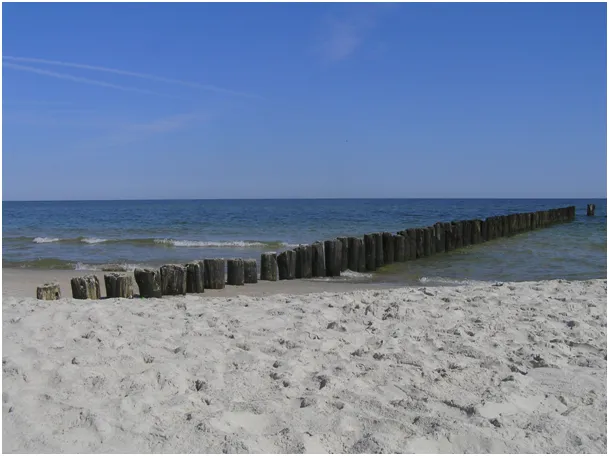
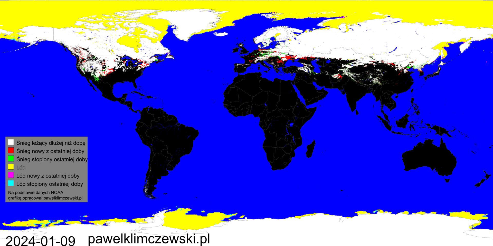
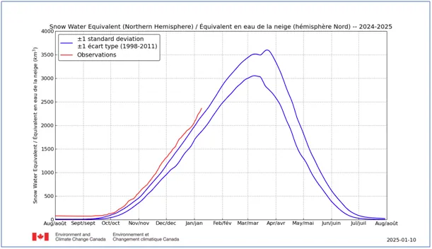
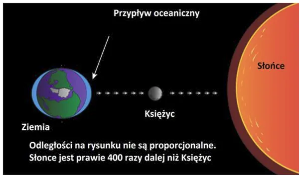
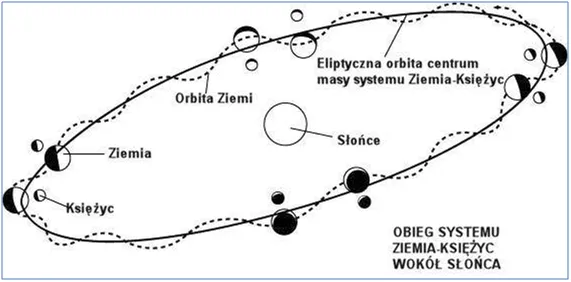

Ziemia obiega Słońce wężykiem
W środku antarktycznego lata, gdy Słońce tam świeci całą dobę, widzimy duże obszary lodu na południowym oceanie. Na północy ilość wody uwięzionej w śniegu cały sezon ponad normą. Idziemy na rekord.

Pamiętajmy, że wykres nie pokazuje śniegu z poprzedniego sezonu, który nie stopniał latem i został przez autorów raportu wygumkowany na przełomie sezonów. Opisałem to tutaj: https://pawelklimczewski.pl/2024/08/15/cud-znikajacego-sniegu/

Na północnej półkuli najbliższy tydzień przyniesie obfite opady, więc mamy wielkie szanse na kolejny rekordowy rok. Oznacza to, że w kolejnym roku z rzędu będziemy mieli przyrost masy śniegu zalęgającego przez wiele lat, czyli rozwój białej czapy. Musi to oznaczać spadek ilości wody w oceanie, rodzi się pytanie: Czy można to zmierzyć? Rozmawiamy tu o milimetrach w trakcie dekady i ułamkach milimetra rocznie. Jest to zadanie abstrakcyjne. Oceany i morza są całe pomarszczone falami sięgającymi do 20 metrów, wody oceaniczne przemieszczają się nieustannie, silne wiatry spiętrzają dodatkowo wody w sposób nam nieznany.

Teraz na scenie walki tych sił pojawia się w akcji Księżyc. Otacza on Ziemię po orbicie tak fantazyjnej, że nigdy nie powtarza się ten sam układ Ziemia -Słońce - Księżyc, więc wielometrowe zmiany pływowe są każdego dnia różne i eliptyczna, zdeformowana bańka oceanów w inny sposób otacza naszą planetę. Ziemia i Księżyc z perspektywy Słońca to jedna masa, para tych wirujących aktorów obraca się wokół własnego środka masy co sprawia, że oba ciała razem poruszają się wokół Słońca po elipsie, ale tor indywidualny Ziemi to "wężyk".

Na koniec ruchy skorupy ziemskiej, ta sama grawitacja, która porusza oceanami potrafi co 24 h podnieść cały kontynent o 30 cm, oczywiście wraz z wybrzeżem i dnem oceanicznym wokół.
W tej sytuacji z przymrużonym okiem życzymy powodzenia śmiałkom mierzącym poziom oceanów na świecie z dokładnością do milimetrów. Proponuje by zaczęli od Bałtyku, tutaj dobowe pływy morskie są małe i wynoszą kilka cm, ale i tak jest to nie do zauważenia z powodu małych fal.
Paweł Klimczewski